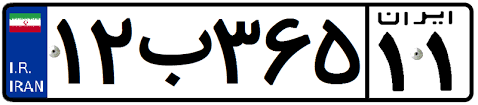

مجموعه مرجع
فرض کنیم $U$ نشان دهندهٔ مجموعهٔ تمام کتابهای کتابخانه آیتالله العظمی مرعشی نجفی (ره) و $A$ مجموعهٔ کتابهای خطی آن باشد. اگر مجموعهای را که شامل کتابهای چاپی این کتابخانه است، با $A'$ نشان دهیم، آنگاه میتوانیم نمودار پایین صفحه را دربارهٔ کتابهای این کتابخانه رسم کنیم. در این مثال $U$ را که شامل تمام کتابهای کتابخانه میباشد، مجموعهٔ مرجع و $A'$ را متمم مجموعه $A$ مینامیم.
در هر مبحث، مجموعهای را که همهٔ مجموعههای مورد بحث، زیرمجموعه آن باشند، مجموعهٔ مرجع مینامیم و آن را با $U$ نشان میدهیم.
هرگاه $U$ مجموعه مرجع باشد و $A \subseteq U$، آنگاه مجموعه $U - A$ را متمم $A$ مینامیم و آن را با نماد $A'$ نشان میدهیم. به عبارت دیگر $A'$ شامل عضوهایی از $U$ است که در $A$ نیستند.
الف) دو مجموعهٔ زیر را در نظر بگیرید و اعضای هر یک را روی محور نشان دهید.
ب) $A$ را با نمایش اعضا و $B$ را بهصورت یک بازه بنویسید.
$$ \begin{align*} A &= \{ \qquad \qquad \qquad \qquad \} \\ \\ B &= \end{align*} $$
پ) در مورد $A$، اگر مجموعهٔ مرجع را $\mathbb{Z}$ در نظر بگیریم، $A'$ را مشخص کنید.
ت) در مورد $B$ با فرض اینکه $\mathbb{R}$ مجموعهٔ مرجع باشد، $B'$ را مشخص کنید و آن را روی محور نمایش دهید.
کتابخانه آیتالله العظمی مرعشی نجفی (ره)، در شهر مقدس قم یکی از بزرگترین کتابخانههای جهان اسلام است که کتابهای نفیس و قدیمی بسیاری را در موضوعات مختلف در خود جای داده است. این کتابخانه از نظر فراوانی نسخههای خطی، نخستین کتابخانه کشور و سومین کتابخانه جهان اسلام بهشمار میرود. جدول زیر اطلاعات مختصری دربارهٔ تعداد کتابهای این کتابخانه در اختیار ما قرار میدهد.
| نوع کتاب | تعداد |
|---|---|
| کتابهای خطی | 42000 جلد |
| کتابهای چاپی | 1000000 جلد |
| کل کتابها | 1042000 جلد |
۱) اگر $U$ مجموعهٔ شامل تمام استانهای کشورمان باشد و $A$ مجموعهٔ استانهای غیرساحلی، آنگاه $A'$ را با نمایش اعضای آن بنویسید.

۲) فرض کنیم $U$ مجموعهٔ تمام اتومبیلهای پلاکگذاری شدهٔ کشور و $B$ مجموعهٔ اتومبیلهای با پلاک فرد باشد. در این صورت $B'$ چه مجموعهای خواهد بود؟
۳) با فرض اینکه $N$ مجموعهٔ مرجع باشد، هر مجموعه را به متمم خودش وصل کنید.
| {1, 3, 5, 7, 9, ...} | {1, 4, 6, 8, 9, 10, 12, 14, ...} |
| {3, 6, 9, 12, ...} | {2, 4, 6, 8, 10, ...} |
| {1, 2, 3, 9, ...} | {1, 2, 4, 5, 7, 8, ...} |
| {2, 3, 5, 7, 11, 13, ...} | {10, 11, 12, 13, 14, ...} |
۴) $U$ مجموعه مرجع و $A$ زیرمجموعه دلخواهی از آن میباشد. طرف دوم تساویهای زیر را بنویسید.
$\emptyset' =$
$U' =$
$A \cup A' =$
$A \cap A' =$
۵)
الف) اگر $Z$ را بهعنوان مجموعه مرجع در نظر بگیریم، آنگاه $N'$ را با نوشتن اعضای آن مشخص کنید.
ب) اگر $R$ را بهعنوان مجموعه مرجع در نظر بگیریم، در این صورت $N'$ را روی محور نمایش دهید.
۶) فرض کنیم $U = \{1, 2, 3, 4, 5\}$ مجموعه مرجع باشد و $A = \{1, 2, 3\}$ و $B = \{2, 4\}$. ابتدا $A'$ و $B'$ را بنویسید و سپس جدولهای زیر را کامل کنید. از هر قسمت چه نتیجهای میگیرید؟
$A' = \{ \qquad \qquad \qquad \}$
$B' = \{ \qquad \qquad \qquad \}$
| $(A')'$ | |
|---|---|
| $\Rightarrow (A')' = A$ | $\{1, 2, 3\}$ |
| $A' \cap \ \ B'$ | |
|---|---|
| $\{ \qquad \qquad \qquad \}$ | |
| $(A \cup B)'$ | |
| $\Rightarrow \qquad ..... \qquad = \qquad ..... $ | $\{ \qquad \qquad \qquad \}$ |
| $A \cup B$ | |
| $\{ \qquad \qquad \qquad \}$ |
| $A \cap B$ | |
|---|---|
| $\{ \qquad \qquad \qquad \}$ | |
| $(A \cap B)'$ | |
| $\Rightarrow \qquad ..... \qquad = \qquad ..... $ | $\{ \qquad \qquad \qquad \}$ |
| $A' \cup \ \ B'$ | |
| $\{ \qquad \qquad \qquad \}$ |
| $A - B$ | |
|---|---|
| $\{ \qquad \qquad \qquad \}$ | |
| $A - (A \cap B)$ | |
| $\Rightarrow \qquad ..... \ \ = \ \ ..... \ \ = \ \ ..... $ | $\{ \qquad \qquad \qquad \}$ |
| $A \cap B'$ | |
| $\{ \qquad \qquad \qquad \}$ |
۷) الف) فرض کنیم $A \subseteq B \subseteq U$ که در آن $U$ مجموعهٔ مرجع است. در نمودارهای مقابل $A'$ و $B'$ را مشخص کنید و سپس تعیین کنید که آیا بین $A'$ و $B'$ هم رابطهٔ زیر مجموعه بودن برقرار است؟ چگونه؟
ب) اگر $U = \{a, b, c, d, e\}$ مجموعهٔ مرجع باشد و $A = \{a, b\}$ و $B = \{a, b, c\}$، در این صورت $A \subseteq B$ میباشد. با بدست آوردن $A'$ و $B'$ نشان دهید که بین $A'$ و $B'$ هم رابطهٔ زیر مجموعه بودن برقرار است.
نرخ بیکاری
جمعیت در سن کار در یک کشور را بهعنوان مجموعه مرجع یعنی $U$ در نظر میگیریم و فرض میکنیم $A$ نشاندهنده مجموعه افراد شاغل این کشور باشد. در این صورت $A'$ برابر مجموعه افراد بیکار و نسبت $\frac{n(A')}{n(U)}$ بیانگر نرخ بیکاری آن کشور خواهد بود.
تعداد عضوهای اجتماع دو مجموعه
در سال گذشته دیدیم که اگر $A$ یک مجموعه متناهی باشد، آنگاه برای نشان دادن تعداد عضوهای آن از علامت $n(A)$ استفاده میشود. مثلاً اگر $G = \{2, 3, 5, 7\}$ در این صورت مینویسیم $n(G) = 4$. در این بخش میخواهیم رابطهای برای $n(A \cup B)$ بدست آوریم.
۱) یک تیم کوهنوردی متشکل از ۴ دانشآموز و ۳ دانشجوی عضو یک مؤسسه طرفدار محیط زیست است. اعضای این تیم بهطور داوطلبانه، در روزهای جمعه هر هفته کوههای اطراف شهر خود را از وجود زباله پاکسازی میکنند.
اعضای دانشآموز این تیم مجموعه $ A = \{\text{آتنا}, \text{زهرا}, \text{الناز}, \text{الهام}\}$ و اعضای دانشجویی آن مجموعه $B = \{\text{فاطمه}, \text{معصومه}, \text{فرزانه}\} $ هستند. همانگونه که دیده میشود، این دو مجموعه هیچ عضو مشترکی ندارند؛ بهعبارت دیگر $A \cap B = \emptyset$.
به دو مجموعه مثل $A$ و $B$ که فاقد عضو مشترک باشند، دو مجموعهٔ جدا از هم یا **مجزا** میگوییم.
الف) اعضای $A \cup B$ را که بیانگر اعضای تیم کوهنوردی تیم میباشد، بنویسید و جدول زیر را تکمیل کنید.
$A \cup B =$
| $n(A \cap B)$ | $n(A \cup B)$ | $n(B)$ | $n(A)$ |
|---|---|---|---|
| ۴ |
ب) تعداد عضوهای $A \cup B$ چه رابطهای با $n(A)$ و $n(B)$ دارد؟ این رابطه را بهصورت یک فرمول بنویسید.
پ) تحت چه شرایطی این فرمول برای دو مجموعه دلخواه $A$ و $B$ برقرار است؟
۲) الف) مجموعه شمارهدههای طبیعی دو عدد ۲۸ و ۳۰ را به ترتیب $A$ و $B$ مینامیم. موارد خواسته شده را بنویسید.
$A = \{\qquad \}$ $\Rightarrow n(A) = ۶$ : مجموعه شمارهدههای عدد ۲۸
$B = \{\qquad \}$ $\Rightarrow n(B) =$ : مجموعه شمارهدههای عدد ۳۰
$A \cap B = \{\}$ $\Rightarrow n(A \cap B) =$ : مجموعه مشترک عدد ۲۸ و ۳۰
$ \qquad \qquad \qquad \qquad \qquad \qquad A \cup B = \{\}$ $\Rightarrow n(A \cup B) =$
ب) جدول زیر را کامل کنید.
| n(A ∪ B) | n(A ∩ B) | n(B) | n(A) |
|---|---|---|---|
| ۶ |
پ) چرا رابطهای را که در فعالیت (۱) بدست آوردید؛ یعنی $n(A \cup B) = n(A) + n(B)$ در این مثال برقرار نیست؟
ت) با تکمیل نمودار مقابل، سعی کنید رابطه درست برای $n(A \cup B)$ را حس بزنید.
همانطور که دیدیم، اگر $A$ و $B$ دو مجموعه متناهی دلخواه باشند، داریم:
$n(A \cup B) = n(A) + n(B) - n(A \cap B)$
با توجه به نمودار فوق، در مورد علت درستی این رابطه با دوستان خود بحث کنید.
۱) یک دوره جشنواره فیلم کوتاه با شرکت ۲۱ فیلم در موضوعات مختلف در حال برگزاری است که در بین آنها ۷ فیلم پویانمایی (کارتونی) و ۸ فیلم طنز وجود دارد، بطوری که ۳ تا از فیلمهای پویانمایی با مضمون طنز میباشند. مطلوب است تعداد کل فیلمهایی که:
الف) پویانمایی
$\text{یا}$
طنزند.
ب) غیرپویانمایی
$\text{و}$
غیر طنزند.
روش اول حل: مجموعه شامل تمام فیلمها را با $U$، مجموعه فیلمهای پویانمایی را با $C$ و مجموعه فیلمهای طنز را با $T$ نشان میدهیم. جایهای خالی را پرکنید و جوابها را بیابید.
الف) $$n(C \cup T) = n(C) + n(T) - n(C \cap T) = ۷ + \cdots - \cdots = \cdots$$
ب) $$n(C' \cup T') = n(U) - n(C \cup T) = \cdots - \cdots = \cdots$$
روش دوم حل: در نمودار ون نمایش داده شده، دو مجموعه $C$ و $T$ سطح درون $U$ را به چهار ناحیه جداگانه تقسیم کردهاند که عدد مربوط به هر کدام از نواحی نوشته شده است. با نوشتن اعداد مربوط به دو قسمت دیگر، جواب قسمتهای (الف) و (ب) را بیابید.
۲) در یک کلاس ۲۵ نفری، تعداد ۱۵ نفر عضو تیم فوتبال و ۱۱ نفر عضو تیم بسکتبال کلاس هستند. اگر ۱۰ نفر از دانشآموزان این کلاس عضو هیچیک از این دو تیم نباشند، مشخص کنید چند نفر از آنها عضو هر دو تیم هستند.
روش اول حل: با تکمیل نمودار ون مقدار $X$ را بیابید.
روش دوم حل: چون ۵ نفر عضو هیچیک از این دو تیم نیستند، پس $n(B \cup F) = ۲۰$. حال با نوشتن فرمول $n(B \cup F)$ میتوان $n(B \cap F)$ را بدست آورد.
۱) $R$ را بهعنوان مجموعه مرجع در نظر بگیرید و سپس متمم هر یک از مجموعههای زیر را روی محور نشان دهید.
$A = [-۲, ۳)$ (الف)
$B = \{۰, ۱, ۲, ۳, ۴, \dots\}$ (ب)
$C = (۰, +\infty)$ (پ)
$D = (-\infty, ۱]$ (ت)
۲) $N$ را بهعنوان مجموعه مرجع در نظر بگیرید.
الف) مجموعهای نامتناهی مثل $A$ مثال بزنید که $A'$ هم نامتناهی باشد.
ب) مجموعهای نامتناهی مثل $B$ مثال بزنید که $B'$ متناهی باشد.
پ) مجموعهای متناهی مثل $C$ مثال بزنید و $C'$ را بدست آورید. $C'$ متناهی است یا نامتناهی؟
۳) اگر $n(A) = 15$ ، $n(A \cap B) = 5$ و $n(A \cup B) = 30$ ، آنگاه $n(B)$ را محاسبه کنید.
۴) فرض کنیم $A$ و $B$ زیرمجموعههایی از مجموعه مرجع $U$ باشند، بهطوری که $n(U) = ۱۰۰$، $n(A) = 60$، $n(B) = ۴۰$ و $n(A \cap B) = ۲۰$. مطلوب است:
$n(A \cup B)$ (الف)
$n(A \cap B')$ (ب)
$n(A' \cap B) $ (پ)
$n(A' \cap B') $ (ت)
۵) در یک کلاس ۳۱ نفری، تعداد ۱۴ نفر از دانشآموزان عضو گروه سرود و ۱۹ نفر آنها عضو گروه تئاترند. اگر ۱۰ نفر از دانشآموزان این کلاس عضو هیچیک از این دو گروه نباشند، مطلوب است:
(الف) تعداد دانشآموزانی که فقط عضو گروه سرودند.
(ب) تعداد دانشآموزانی که عضو هیچیک از این دو گروه نیستند.
۶) در یک نظرسنجی از ۱۱۰ مشتری یک فروشگاه زنجیرهای، مشخص شد که ۷۰ نفر آنها در یک ماه گذشته از محصولات شرکت $A$ و ۵۷ نفرشان از محصولات شرکت $B$ خرید کردهاند. همچنین ۳۲ نفر از آنان نیز اعلام کردند که در این مدت از هر دو شرکت خرید کردهاند. چه تعداد از این ۱۱۰ نفر در یک ماه گذشته:
(الف) دستکم از یکی از این دو شرکت خرید کردهاند.
(ب) فقط از شرکت $A$ خرید کردهاند.
(پ) دقیقاً از یکی از این دو شرکت خرید کردهاند.
(ت) از هیچیک از این دو شرکت خرید نکردهاند.